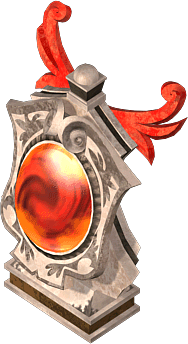

通常｜狀態異常防禦｜消耗品
提供情報或編輯請求，請到情報提供公佈欄、編輯公佈欄。
一般
| 名稱 | 價格 | 限制 | 職業 | Wei | 取得方式 |
| 幸運護身符[1] | 10 | Lv1 | 戰修盜騎阿聖魔預吟 | 2 |  藍槍魚、 藍槍魚、 水母、 水母、 章魚 章魚 |
MP+5、SP+5
幸運數字1。蘊含神祕力量的神具。
| 名稱 | 價格 | 限制 | 職業 | Wei | 取得方式 |
| 幸運護身符[2] | 10 | Lv1 | 戰修盜騎阿聖魔預吟 | 2 |  魟魚、 魟魚、 白帶魚 白帶魚 |
HP+5、MP+10、SP+10
幸運數字2。蘊含神祕力量的神具。
| 名稱 | 價格 | 限制 | 職業 | Wei | 取得方式 |
| 幸運護身符[3] | 10 | Lv1 | 戰修盜騎阿聖魔預吟 | 2 |  熱帶魚（付費小刀使用）、章魚（付費小刀使用）、 熱帶魚（付費小刀使用）、章魚（付費小刀使用）、 河豚、 河豚、 龍蝦、 龍蝦、 鯊魚 鯊魚 |
HP+30、MP+30、SP+30
幸運數字3。蘊含神祕力量的神具。
| 名稱 | 價格 | 限制 | 職業 | Wei | 取得方式 |
| 幸運護身符[4] | 10 | Lv1 | 戰修盜騎阿聖魔預吟 | 2 | 白帶魚(付費小刀使用)、河豚、龍蝦、鯊魚 |
HP+40、MP+40、SP+40
幸運數字4。蘊含神祕力量的神具。
| 名稱 | 價格 | 限制 | 職業 | Wei | 取得方式 |
| 艾德之靈 | 100,000 | Lv1 | 戰修盜騎阿聖魔預吟 | 1 | Q:古代預言者的占術卡 |
HP+30 MP+30 SP+30
裝備在輔助欄位的話，能在一定程度上保護身體。[不可轉讓][不可存銀行]
| 名稱 | 價格 | 限制 | 職業 | Wei | 取得方式 |
 墮天使的起源 墮天使的起源 | 10 | Lv1 | 戰修盜騎阿聖魔預吟 | 2 | 通緝書100(魔界村肯比歐斯捕獲)褒章 |
HP+40 MP+30 SP+30
最初製作的神聖雕像。具有神祕的力量。
| 名稱 | 價格 | 限制 | 職業 | Wei | 取得方式 |
| 祈禱石像 | Lv1 | 戰修盜騎阿聖魔預吟 | 0 |  寵物玩偶 寵物玩偶 |
HP+50、MP+50、SP+30
據說能接受神力的星之洗禮。隨身攜帶即可獲得加護
| 名稱 | 價格 | 限制 | 職業 | Wei | 取得方式 |
| 神秘的燈籠 | 150,000 | Lv11 | 戰修盜騎阿聖魔預吟 | 2 | Q:孩子們的失蹤 |
HP+10、MP+10、SP+10
旅行者們隨身攜帶的燈 [不可擺攤販賣] [可放地上]
| 名稱 | 價格 | 限制 | 職業 | Wei | 取得方式 |
 鐵之棘 鐵之棘 | 150,000 | Lv31 | 戰修盜騎阿聖魔預吟 | 3 | 寵物玩偶 |
DAM+1% HP+10 MP+10 SP+10 STR+1
鐵製的鋒利尖刺。裝備後攻擊力上升。
| 名稱 | 價格 | 限制 | 職業 | Wei | 取得方式 |
 魔石碎片 魔石碎片 | 150,000 | Lv31 | 戰修盜騎阿聖魔預吟 | 3 | 寵物玩偶 |
MDAM+1% HP+10 MP+10 SP+10 INT+1
蘊含魔力的小碎片。裝備後魔力上升。
| 名稱 | 價格 | 限制 | 職業 | Wei | 取得方式 |
 集中念珠 集中念珠 | 150,000 | Lv31 | 戰修盜騎阿聖魔預吟 | 3 | 寵物玩偶 |
HIT+1% HP+10 MP+10 SP+10 DEX+1
提升專注力的念珠。裝備後命中率上升。
| 名稱 | 價格 | 限制 | 職業 | Wei | 取得方式 |
 集中寶玉 集中寶玉 | 150,000 | Lv31 | 戰修盜騎阿聖魔預吟 | 3 | 寵物玩偶 |
MHIT+1% HP+10 MP+10 SP+10 INT+1
提升專注力的寶石。裝備後魔法命中率上升。
| 名稱 | 價格 | 限制 | 職業 | Wei | 取得方式 |
| 四術的人偶 | Lv51 | 戰修盜騎阿聖魔預吟 | 2 | 怨靈術士:滿月的櫻花村 |
AC-2 MC-5 SAR1% HP+20 MP+10 SP+10(+OP附魔)
賦予能承受我的詛咒者偉大的力量[使用期限:2週間]
| 名稱 | 價格 | 限制 | 職業 | Wei | 取得方式 |
 哈比的包袱 哈比的包袱 | Lv80,FLv31 | 戰修盜騎阿聖魔預吟 | 1 | 童話彩券 |
HP+100 MP+100 SP+50
-
| 名稱 | 價格 | 限制 | 職業 | Wei | 取得方式 |
| 溫蒂的緞帶 | Lv91,FLv31 | 戰修盜騎阿聖魔預吟 | 1 | 童話彩券 |
HP+50 MP+50 SP+50 STR+1 CON+1 INT+1 WIS+1 DEX+1
-
| 名稱 | 價格 | 限制 | 職業 | Wei | 取得方式 |
| 黑龍的聖水 | 100 | Lv91,FLv31 | 戰修盜騎阿聖魔預吟 | 1 | 2012年初次活動「巫女的尋物」2013年初次活動「巫女的尋物」 |
HP+50、MP+30、SP+30、STR+1、CON+1、INT+1、WIS+1、DEX+1
蘊含黑龍氣運的聖水。具有神祕的效果。
| 名稱 | 價格 | 限制 | 職業 | Wei | 取得方式 |
| 天使的起源 | 1,500,000 | Lv91,FLv31 | 戰修盜騎阿聖魔預吟 | 2 |  魔鏡艾尼西恩 |
HP+70、MP+70、SP+70
模仿天使姿態的飾品。裝備後能力提升。
| 名稱 | 價格 | 限制 | 職業 | Wei | 取得方式 |
 憤怒天使的加護 憤怒天使的加護 | Lv95,FLv35 | 戰修盜騎阿聖魔預吟 | 3 | Q:赫爾西昂升級 |
DAM+2、HIT+1、MDAM+1、MHIT+1、HP+30
強化了天使起源的神器。裝備後會被賦予神的力量。
| 名稱 | 價格 | 限制 | 職業 | Wei | 取得方式 |
 墮落天使的加護 墮落天使的加護 | Lv95,FLv35 | 戰修盜騎阿聖魔預吟 | 3 | Q:赫爾西昂升級 |
STR+2、CON+2、INT+2、WIS+2、DEX+2、HP+30
強化了天使起源的神器。裝備後會被賦予神的力量。
| 名稱 | 價格 | 限制 | 職業 | Wei | 取得方式 |
 悔改天使的加護 悔改天使的加護 | Lv95,FLv35 | 戰修盜騎阿聖魔預吟 | 3 | Q:赫爾西昂升級 |
AC-2、MC-2、SAR+1、HP+30、ADDown1%、MDDown1%
強化了天使起源的神器。裝備後會被賦予神的力量。
| 名稱 | 價格 | 限制 | 職業 | Wei | 取得方式 |
| 露西的鞭子 | Lv98,FLv71 | 戰修盜騎阿聖魔預吟 | 1 | 童話彩券 |
DAM+1% HP+50 SP+30 STR+3 DEX+3
-
| 名稱 | 價格 | 限制 | 職業 | Wei | 取得方式 |
 幽光藍色球體 幽光藍色球體 | 30,000 | Lv100,FLv71TLv41,BLv41 | 戰修盜騎阿聖魔預吟 | 5 |  迪奧特 迪奧特 |
AC-1、MC-1、HP+70、SP+50 +OP附魔
微微發光的不可思議結晶體 可裝備於輔助武器欄位 可藉由魔石之力強化 備註：耐久度9000%、交換/使用時專屬
| 名稱 | 價格 | 限制 | 職業 | Wei | 取得方式 |
| 盧尼克藍色球體 | - | Lv105,FLv81TLv51,BLv51 | 戰修盜騎阿聖魔預吟 | - |
-
目前無法升級
| 名稱 | 價格 | 限制 | 職業 | Wei | 取得方式 |
| 迪卡盧尼克藍色球體 | - | Lv110,FLv91TLv61,BLv61 | 戰修盜騎阿聖魔預吟 | 7 |
AC-2、MC-1、DAM2%、HIT2%、HP+100、SP+70
目前無法升級
| 名稱 | 價格 | 限制 | 職業 | Wei | 取得方式 |
 幽光紫色球體 幽光紫色球體 | 30,000 | Lv100,FLv71TLv41,BLv41 | 戰修盜騎阿聖魔預吟 | 5 | 迪奧特 |
AC-1、MC-1、HP+70、MP+50 +OP附魔
微微發光的不可思議結晶體 可裝備於輔助武器欄位 可藉由魔石之力強化 備註：耐久度9000%、交換/使用時專屬
| 名稱 | 價格 | 限制 | 職業 | Wei | 取得方式 |
| 盧尼克紫色球體 | - | Lv105,FLv81TLv51,BLv51 | 戰修盜騎阿聖魔預吟 | - |
-
目前無法升級
| 名稱 | 價格 | 限制 | 職業 | Wei | 取得方式 |
| 迪卡盧尼克紫色球體 | - | Lv110,FLv91TLv61,BLv61 | 戰修盜騎阿聖魔預吟 | 7 |
AC-1、MC-2、MDAM3%、MHIT2%、HP+100、MP+70
目前無法升級
| 名稱 | 價格 | 限制 | 職業 | Wei | 取得方式 |
 忘卻的美麗的龍玉 忘卻的美麗的龍玉 | 50,000 | Lv105,FLv71TLv21,BLv21 | 戰修盜騎阿聖魔預吟 | 5 |
AAR+1、DAM+1、HIT+1、STR+1、HP+84、SP+42、STR1 +OP附魔
注入龍之力至極限的珠子。死亡時消失備註：交換/使用時專屬 可存銀行
| 名稱 | 價格 | 限制 | 職業 | Wei | 取得方式 |
| 被封印的美麗的龍玉 | 150,000 | Lv105,FLv71TLv21,BLv21 | 戰修盜騎阿聖魔預吟 | 5 |  哥布林（騎士） 哥布林（騎士） |
AAR+1、DAM+1、HIT+1、STR+1、HP+50、SP+40
被封印了勇猛之力的龍玉輔助武器。耐久度100%備註：交換/使用時專屬 可存銀行
| 名稱 | 價格 | 限制 | 職業 | Wei | 取得方式 |
| 美麗的龍玉 | 500,000 | Lv105,FLv71TLv21,BLv21 | 戰修盜騎阿聖魔預吟 | 5 |
AAR+1、DAM+1、HIT+1、HP+80、SP+40、STR+1
勇猛之力發揮到極大的龍玉。裝備於輔助武器欄位時能力值上升。耐久度100%備註：交換/使用時專屬 可存銀行
| 名稱 | 價格 | 限制 | 職業 | Wei | 取得方式 |
 忘卻的燦爛龍玉 忘卻的燦爛龍玉 | 50,000 | Lv105,FLv71TLv21,BLv21 | 戰修盜騎阿聖魔預吟 | 5 |
SAR+1、HP+52、MP+3、INT+1、MHIT+1、MDAM+1 +OP附魔
注入龍之力至極限的珠子。死亡時消失備註：交換/使用時專屬 可存銀行
| 名稱 | 價格 | 限制 | 職業 | Wei | 取得方式 |
| 被封印的燦爛龍玉 | 150,000 | Lv105,FLv71TLv21,BLv21 | 戰修盜騎阿聖魔預吟 | 5 | 哥布林（騎士） |
SAR+1、HP+30、MP+50、INT+1、MHIT+1、MDAM+1
被封印了智慧之力的龍玉輔助武器。耐久度100%備註：交換/使用時專屬 可存銀行
| 名稱 | 價格 | 限制 | 職業 | Wei | 取得方式 |
| 燦爛龍玉 | 500,000 | Lv105,FLv71TLv21,BLv21 | 戰修盜騎阿聖魔預吟 | 5 |
SAR+1、HP+50、MP+70、INT+1、MHIT+1、MDAM+1
智慧之力發揮到極大的龍玉。裝備於輔助武器欄位時能力值上升。耐久度100%備註：交換/使用時專屬 可存銀行
| 名稱 | 價格 | 限制 | 職業 | Wei | 取得方式 |
| 納茲的圍巾 | Lv110,FLv100 | 戰修盜騎阿聖魔預吟 | 3 | 童話彩券 |
AAR+1% SAR+1% DAM+1% MDAM+1% HIT+2% MHIT+2%HP+60 MP+60 SP+60 STR+2 CON+1 INT+2 WIS+1 DEX+2
-
異常狀態防禦
| 名稱 | 價格 | 限制 | 職業 | Wei | 取得方式 |
| 夢幻燈籠 | Lv61,FLv21 | 戰修盜騎阿聖魔預吟 | 1 | 2012/02女兒節活動褒章品 |
AC-1、MC-2、AAR+1、SAR+2、HP+10、MP+20、SP+20黑暗防禦(PCount:30)
只有在櫻花村才能得到的夢幻燈籠。
消耗品
| 名稱 | 價格 | 限制 | 職業 | Wei | 取得方式 |
 波普休克 [1] 波普休克 [1] | - | Lv0 | 戰修盜騎阿聖魔預吟 | 0 | 熱帶魚、藍槍魚、水母 |
| 能力 | 次數：20次 [不可轉讓] | ||||
| 備註 | 使用持續性魔法時自動消耗，延長魔法持續效果 | ||||
| 名稱 | 價格 | 限制 | 職業 | Wei | 取得方式 |
| 波普休克 [2] | - | Lv0 | 戰修盜騎阿聖魔預吟 | 0 | 白帶魚、魟魚 |
| 能力 | 次數：40次 [不可轉讓][不可存銀行] | ||||
| 備註 | 使用持續性魔法時自動消耗，延長魔法持續效果 | ||||
| 名稱 | 價格 | 限制 | 職業 | Wei | 取得方式 |
| 波普休克 [3] | 10 | Lv0 | 戰修盜騎阿聖魔預吟 | 1 | 熱帶魚、河豚、鯊魚 |
| 能力 | 次數：40次 [不可轉讓] [不可存銀行] | ||||
| 備註 | 使用持續性魔法時自動消耗，延長魔法持續效果 | ||||
| 名稱 | 價格 | 限制 | 職業 | Wei | 取得方式 |
| 波普休克 [4] | 10 | Lv0 | 戰修盜騎阿聖魔預吟 | 1 | 白帶魚、龍蝦、鯊魚 |
| 能力 | 次數：60次 [不可轉讓] [不可存銀行] | ||||
| 備註 | 使用持續性魔法時自動消耗，延長魔法持續效果 | ||||
| 名稱 | 價格 | 限制 | 職業 | Wei | 取得方式 |
 戰鬥衝擊-1 戰鬥衝擊-1 | 10 | Lv1 | 戰修盜騎阿聖魔預吟 | 1 |  羅佩迪安的委託書 羅佩迪安的委託書 |
| 能力 | 次數：250次 [可存銀行] [可放地上] [可轉讓?] [可擺攤販賣?] | ||||
| 備註 | 近戰攻擊時自動消耗，給予對象衝擊以造成更大傷害。DAM 20%UP | ||||
| 名稱 | 價格 | 限制 | 職業 | Wei | 取得方式 |
| 霍米爾皮萊特 | 50,000 | Lv1 | 戰修盜騎阿聖魔預吟 | 1 | Q:往日英雄的遺產 |
| 能力 | 次數：250次 [不可轉讓] [不可存銀行] | ||||
| 備註 | 裝備於輔助欄位，物理攻擊時自動消耗並造成更大傷害。 | ||||
| 名稱 | 價格 | 限制 | 職業 | Wei | 取得方式 |
 塔卡斯皮萊特 塔卡斯皮萊特 | 50,000 | Lv1 | 戰修盜騎阿聖魔預吟 | 1 | Q:往日英雄的遺產 |
| 能力 | 次數：150次 [不可轉讓] [不可存銀行] | ||||
| 備註 | 裝備於輔助欄位，魔法攻擊時自動消耗並造成更大傷害。 | ||||
| 名稱 | 價格 | 限制 | 職業 | Wei | 取得方式 |
 卡拉姆特皮萊特 卡拉姆特皮萊特 | 50,000 | Lv1 | 戰修盜騎阿聖魔預吟 | 1 | Q:往日英雄的遺產 |
| 能力 | 次數：100次 [不可轉讓] [不可存銀行] | ||||
| 備註 | 裝備於輔助欄位，使用持續性魔法時自動消耗，進一步延長持續時間。 | ||||
| 名稱 | 價格 | 限制 | 職業 | Wei | 取得方式 |
| 戰鬥衝擊-2 | 10 | Lv1 | 戰修盜騎阿聖魔預吟 | 1 | 怪物相簿 不可思議相簿盒LV1 |
| 能力 | 次數：250次 [可存銀行] [可放地上] [可轉讓] [可擺攤販賣] | ||||
| 備註 | 近戰攻擊時自動消耗，給予對象衝擊以造成更大傷害。DAM 30%UP | ||||
| 名稱 | 價格 | 限制 | 職業 | Wei | 取得方式 |
| 魔法衝擊-2 | 10 | Lv1 | 戰修盜騎阿聖魔預吟 | 1 | 怪物相簿 不可思議相簿盒LV1 |
| 能力 | 次數：150次 [可存銀行] [可放地上] [可轉讓] [可擺攤販賣] | ||||
| 備註 | 魔法攻擊時自動消耗，給予對象衝擊以造成更大傷害。MDAM 30%UP | ||||
| 名稱 | 價格 | 限制 | 職業 | Wei | 取得方式 |
| 波普休克-2 | 10 | Lv1 | 戰修盜騎阿聖魔預吟 | 1 | 怪物相簿 不可思議相簿盒LV1 |
| 能力 | 次數：100次 [可存銀行] [可放地上] [可轉讓] [可擺攤販賣] | ||||
| 備註 | 使用持續性魔法時自動消耗，魔法持續時間延長30% | ||||